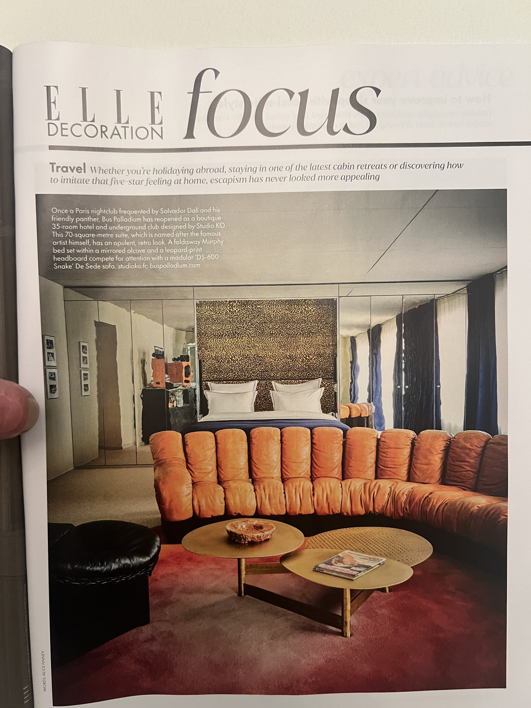
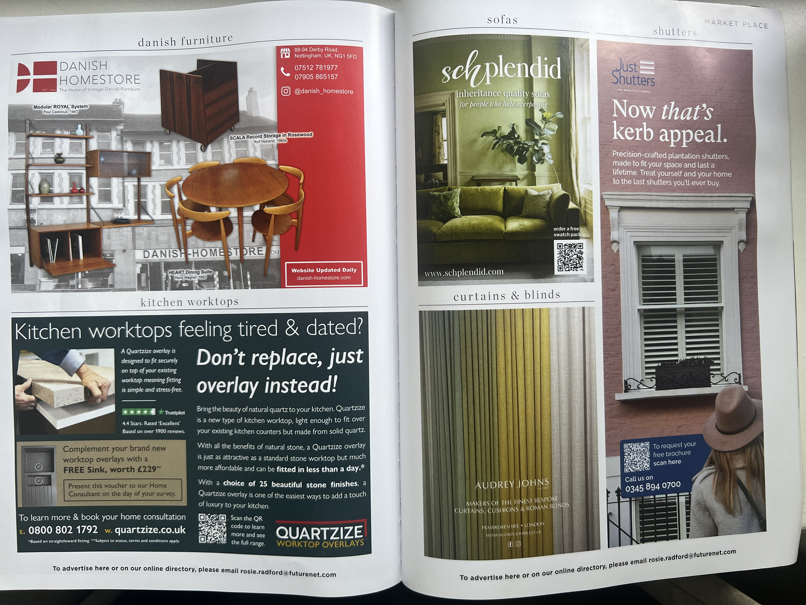
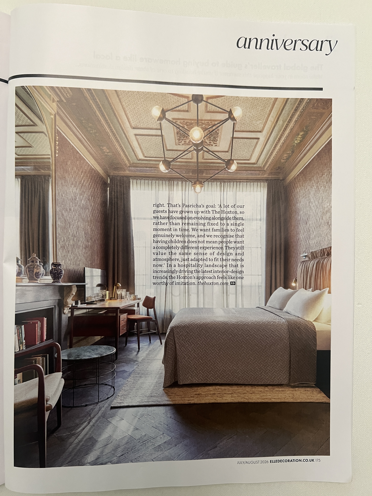

Рассказ-показ · Британская высшая школа дизайна · Maison&Objet 2026
Стили vs Тренды
Какие прижились, а какие забыты?
Ольга Розет
- Оптика художника.
- Историческая дуга 1920–2026.
- «Материя сохраняет то, что забывает глаз»
- Рассказ-показ
- 81 минута лекции
- 36 фрагментов рассказа
- 7 осей авторской матрицы
- Развороты Elle Decoration · Livingetc
Инструмент Ольги Розет
Оси анализа
Семь осей — рабочая оптика: по ним разбирается любой интерьер, и по ним же собраны главы этого рассказа.
- Формообразование
Морфология
Скульптура, мутация, ландшафт
Язык формы: от историчных силуэтов и барочной театральности до мутирующих ландшафтных форм и скульптурной мебели. Как рождается форма — из истории, из природы или из чистой геометрии.
- Большие стили эпохи
- Возвращение к корням · 4 ключевых тренда
- Transformism by Harry Nuriev
- Органические поверхности и рельеф
- Facultative Works (Эдуард Еремчук и Катя Пятицкая)
- Yoomoota (Тарас Желтышев)
- Куратор: Руди Генар (Rudy Guénaire)
- Переосмысленное барокко через пустоту
- Слои времени в современном интерьере
- Elle Decoration: Сюрреализм и форма
- Палисандр, реечные ставни и теплая скандинавская геометрия
- Самостоятельная аналитика трендов
- Программа «Декорирование интерьера» в Британке
- Цвета
Интенсивность, температура, характер
Яркие vs приглушённые, тёплые vs холодные
Не перечень конкретных цветов, а генеральные позиции: интенсивность (яркие, приглушённые), температура (тёплые, холодные), место цвета в орнаменте. Минеральная палитра 2026: терракота, охра, известняк.
- Орнаменты
Геометрия и растительность
Геометричные, растительные, гибридные
Геометрические или растительные? Или присутствуют оба — и можно выбирать. Переосмысление орнаментики из Ар-деко, фольклорных мотивов и традиционных ремесленных паттернов.
- Текстуры
Тактильность и столкновение фактур
Тач-тач-тач, множество фактур
Тренд на огромное количество текстур в одном месте. Столкновение разных по тактильности материалов — фольклорный текстиль рядом с камнем, вафельный лен рядом с кожей. Задержаться в телесном опыте.
- Возвращение к корням · 4 ключевых тренда
- Злата Корнилова · Glifart
- Куратор: Франсуа Делькло (François Delclaux)
- Органические поверхности и рельеф
- Переосмысленное барокко через пустоту
- Монолитный камень и натуральный текстиль
- Традиционные методы в современном цикле
- Elle Decoration: Фактура льна и кожи
- Природа внутри дома: живые растения, открытый камень и дерево
- Шерстяные пледы, грубый хлопок и отсутствие синтетического блеска
- Синтез журнального анализа 2026
- Самостоятельная аналитика трендов
- Материалы
Честность сырья без имитаций
Камень, дерево, металл, стекло, лён
Природное сырье без имитаций: необработанный травертин, массив палисандра, вафельный лен, кованый металл, застывшее стекло. Марцин Русак (Flower Infused Glass), Facultative Works (металл как органическая складка).
- Возвращение к корням · 4 ключевых тренда
- Злата Корнилова · Glifart
- Архаика и современный жест
- Куратор: Франсуа Делькло (François Delclaux)
- Марцин Русак (Marcin Rusak)
- Facultative Works (Эдуард Еремчук и Катя Пятицкая)
- Монолитный камень и натуральный текстиль
- Куратор: Элизабет Лериш (Elizabeth Leriche)
- Традиционные методы в современном цикле
- Полистаем интерьерные журналы 2026 года
- Elle Decoration: Фактура льна и кожи
- Палисандр, реечные ставни и теплая скандинавская геометрия
- Природа внутри дома: живые растения, открытый камень и дерево
- Шерстяные пледы, грубый хлопок и отсутствие синтетического блеска
- Самостоятельная аналитика трендов
- Технологии
Craft, 3D-печать и ручные техники
Craft, 3D, ремесло + высокие технологии
Соединение ремесленного craft и высоких технологий: 3D-печать, биомимикрия, переосмысление традиционных технологий. Артизаны как мост между хай-теком и ручным трудом.
- Философия времени
Идеология и философия времени и места
Деглобализация, экология, мета-модерн
Идеология, философия времени и географической точки. Дизайн в мировом политическом и экономическом контексте: деглобализация, устойчивое развитие, замедление перепроизводства, локальная идентичность.
- Стили vs Тренды
- Политико-экономический контекст
- Большие стили эпохи
- Определение тренда
- Transformism by Harry Nuriev
- Культурная память предметов
- Марцин Русак (Marcin Rusak)
- Yoomoota (Тарас Желтышев)
- Куратор: Руди Генар (Rudy Guénaire)
- Куратор: Элизабет Лериш (Elizabeth Leriche)
- Полистаем интерьерные журналы 2026 года
- Синтез журнального анализа 2026
- Самостоятельная аналитика трендов
- Программа «Декорирование интерьера» в Британке
Глава 01 · 00:00 – 16:47 — Большие стили vs Тренды

Ольга Розет — художник, искусствовед, куратор программы „Декорирование интерьера“ в БВШД

«Дизайн всегда находится в мировом политическом и экономическом контексте»

Стиль — это фундаментальный каркас эпохи, а тренд — ее быстрая реакция

Trend — основная тенденция, направление изменения настроений и потребностей общества

Метаморфоза · Мутация · Переосмысленное барокко · Неофольклор
Глава 02 · 16:47 – 31:17 — Гарри Нуриев — Transformism
«Пришло время не создавать больше, а видеть яснее»
Гарри Нуриев (дизайнер года Maison&Objet) постулирует отказ от бесконечного перепроизводства новых форм. Ценностью становится не вещь сама по себе, а изменение угла зрения.
- Отказ от избытка.
- Пересборка утилитарного.
- Честность взгляда.
Аудио-фрагмент лекции (дословно):

«Если XVIII век говорил цветом, XIX — формой, а XX — философией, то сегодняшний голос — это голос восприятия... Пришло время не создавать больше, а видеть яснее»
Глава 03 · 31:17 – 50:58 — What's New? In Retail: Франсуа Делькло
Фрагмент лекции (Франсуа Делькло):

Тактильный текстиль, живой гобелен и авторский арт-объект
Соединение архаичного ремесла и современного пространственного жеста.

Сохранение ручного ткачества в диалоге с современной архитектурой

«Материя сохраняет то, что забывает глаз»

Материалы обретают природную шероховатость и текучесть

Переосмысление локальных ремесел без ухода в этнографический китч

Flower Infused Glass — застывшие во времени живые цветы, биомимикрия и хрупкость
Смола и стекло останавливают увядание; заземление — в природной хрупкости.

Металл как органическая ткань. Индустриальный ресайкл с человеческим теплом
Металл как органическая складка: ресайкл и новая тактильность промышленного материала.

Биоморфная пластика и сказочная анатомия предметов в жилом интерьере
Глава 04 · 50:58 – 1:04:21 — Hospitality & Decor: Генар и Лериш
Освобождение гостиничного номера от псевдоискусства. Драматизм через пустоту

Метаморфоза гостиничного пространства через освобождение от псевдоискусства
Переосмысленное барокко. Устранение нагромождения мебели. Номер как храм тишины и чистой фактуры камня и льна.

Драматизм достигается не нагромождением вещей, а качеством тишины и света

Пространство, где тело отдыхает от визуального шума

Проект „Археология будущего“ (An Archaeology of the Future)
Неофольклор, раскопки культурных слоёв и гибридизация эпох.

Соединение античных силуэтов и цифровой параметрики

Глина, терракота, шерсть ручного прядения как основа уюта
Глава 05 · 1:08:29 – 1:14:11 — Полистаем интерьерные журналы 2026
106 оригинальных 12-мегапиксельных снимков из Google Drive Ольги: Elle Decoration (Июль–Август 2026) и Livingetc (Май 2026) — здесь избранные развороты. Живой типографский глянец, фактура бумаги и макро-детали интерьеров. Фотографии разворотов: © Elle Decoration · © Livingetc; фрагменты приводятся в обзорных целях с указанием источника.

Как подиумная концепция выставки материализуется в реальном жилом доме

100 лет сюрреализма (1924–2024–2026): игра масштабов и странность обыденного

Вафельный лен и состаренная кожа в интерьере загородного люкса


Интерьер больше не про показуху — он про качество осязания жизни

Трансформация гаража в 70-м люкс: вафельный лен, черная кожа, патина латуни.

Датский модернизм 1960-х: палисандр, реечные ставни и теплая древесина.

Минеральная гамма: терракота, известняк и матовая глубина цвета.
Тактильное зонирование: тяжелые шторы и естественный свет.
Глава 06 · 1:14:11 – 1:20:51 — Матрица и Британка: Практика взгляда
Всё связано с нашим тач-тач-тач, задержаться на этой земле, задержаться в телесном опыте
Фрагмент лекции (Ольга Розет · 77:50):

«Формообразование (морфология), цвета, орнаменты, текстуры, материалы, технологии, идеология/философия времени»

Старт 22 октября 2026 · 8 месяцев глубокой практики и калибровки оптики
Матрица семи осей
Универсальный объективный инструмент для декораторов и архитекторов. Обоснование концепций и смет перед заказчиками.
Старт 22 октября 2026
Декорирование интерьера в Британке
8 месяцев глубокого погружения. Авторская программа Ольги Розет в Британской высшей школе дизайна (Universal University).
- Очный формат · Москва
- Практика и дипломные проекты
- Калибровка оптики